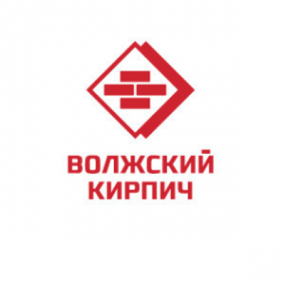

Тольяттинский кирпичный
завод

Открытое акционерное общество «Тольяттинский кирпичный завод» - одно из крупнейших предприятий строительной отрасли Самарской области. Основная деятельность – производство и реализация керамического кирпича и камня. Заслуженная положительная репутация ОАО «ТКЗ» - результат многолетнего труда, основанного на богатом опыте высококвалифицированного персонала, постоянно работающего над расширением ассортимента и повышением качества выпускаемой продукции. Производственная мощность предприятия на сегодняшний день составляет 40 млн. шт. условного кирпича в год.